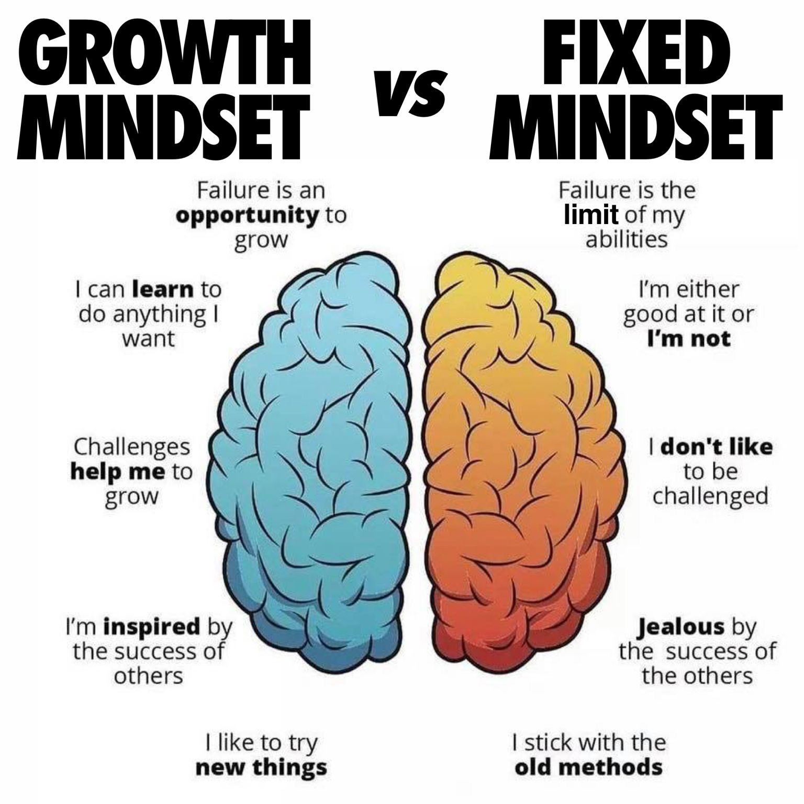
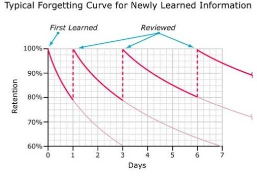
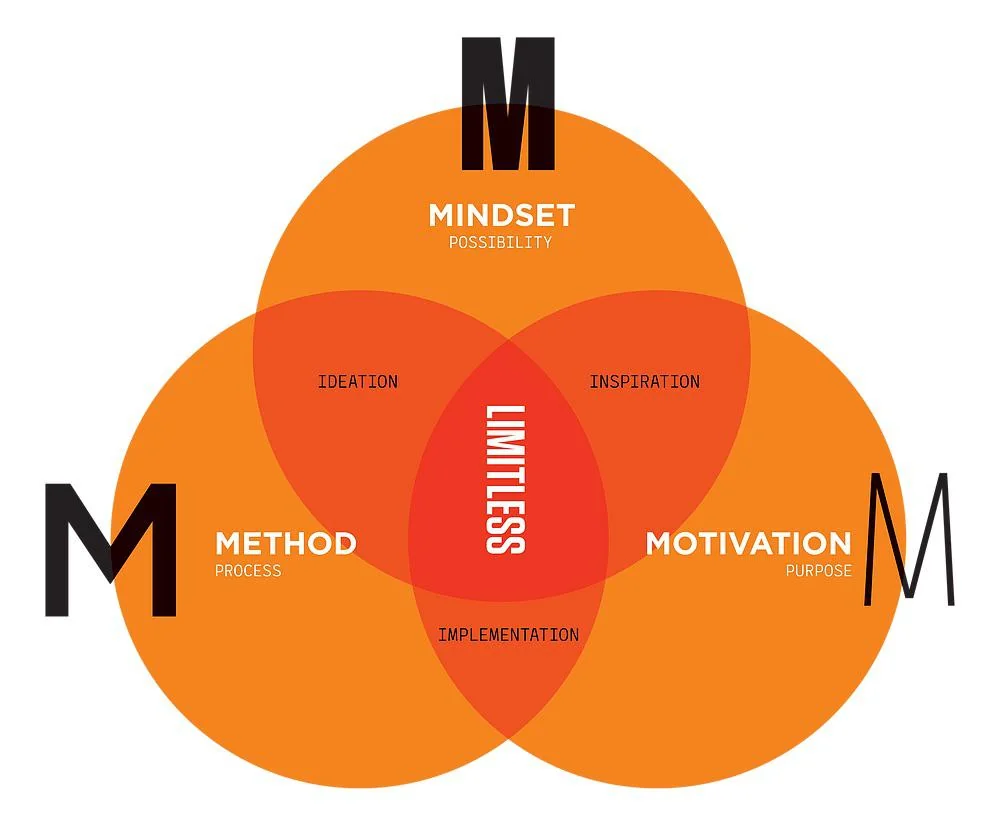

There are many things that make maths difficult: lack of practice, unfamiliarity, and most importantly, the limits you put on yourself.
So before we begin, I would like to convince you to change your perception of maths. Here are a few things to consider.
A growth mindset is simply turning your "I can't do this" statements into "I could do this." Giving things a try before giving up. Ultimately, being more open-minded about things.
Part of the reason why you don't seem to be good at maths is because you choose to stay bad at maths, which makes you bad at maths.
So, from now on, remove any labels you have on the subject and, most importantly, labels you have on your capabilities. Only then will you start to improve.
A lot of people don't know how to revise. Well, I'd like to say it's your lucky day, because I'll tell you – you have to figure it out yourselves. Now, I say this before giving you some options, so you can decide. There are so many methods out there. But the most common one is to learn by rote.
This method seems to work for a lot of people. Read your notes, constantly. Then repeat. Do this until you remember. People might think that this is the only method, but there are more.
It depends on what kind of person you are. This is exciting because you're going to learn in your own terms in a creative way.
The rote method is good for many and has been used for many years, and it works, but you have to admit one thing: it's boring. So it isn't necessarily the subject, it's the way you learn, and there are many ways to learn.
They usually have something to do with your senses.
By the way, not every option here will be appropriate for every subject.
Now, not all of these examples will be appropriate for every subject, but these are different ways you can learn with your senses. The trick is to try and use as many of these as you can. For example, watching videos and listening to notes.
There are more methods, but I want to introduce you to two concepts: active recall and spaced repetition.
Active recall is exactly what it sounds like. You actively try to remember the information by doing the following things:
The common theme here is repetition, but it's different from the rote method because you're allowing yourself to forget with...
Let's say you're studying algebra. You're struggling, but then by the end of the study session, you understand. Do you:
The answer is B. You simply forget and then remember. In the book Make It Stick, it emphasizes that this way of learning is the best.
It might seem counterintuitive, but even if you forget things, when you see the right answers, it will stay in your long-term memory the more times you review it.
As you can see in the graph, overall, you will remember the material.
If you still doubt this, here is a peer-reviewed article that supports this claim. It states that Active recall strategies exhibit promise for effective learning, and additional research in this developing field can support academic pursuits.
So, to sum up: learn, practice, forget, and repeat.
This one is a difficult one as people's motivation to revise varies. Maintaining a good sleep schedule and having a good diet is crucial. But I find that if you enjoy learning, then you'd want to study. So, why do you want to study?
Exploring why you want to study maths will give you motivation. Maths is a subject that will open many doors for you academically. Think about a subject one could study in university. Let's say Sociology. Sociology uses an area of maths called statistics for research. In fact, nearly all jobs use maths in some way.
So, the question of when will I ever use maths is answered: from when you want to calculate the initial speed of a rollercoaster at a particular point in a track, or calculating the angle a ball travels when a footballer hits it in a video game.
Or even simple things such as knowing how much change you will give to a customer. You need maths.
Long term, it could help you get that dream job and salary you want, or if you like solving problems in general, maths is the subject for you!
Finally, I want you to begin your maths revision by taking these three things into account. You need motivation, the methods, and the mindset. This is Jim Kwik's model to learn anything, and if you're lacking in one area, work towards getting it back.
Now use these tools I have given you to succeed in maths.
"Education is the most powerful weapon which you can use to change the world." – Nelson Mandela